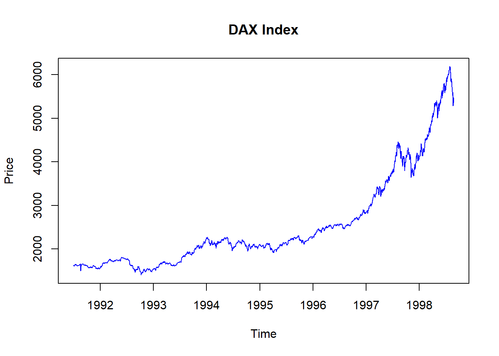
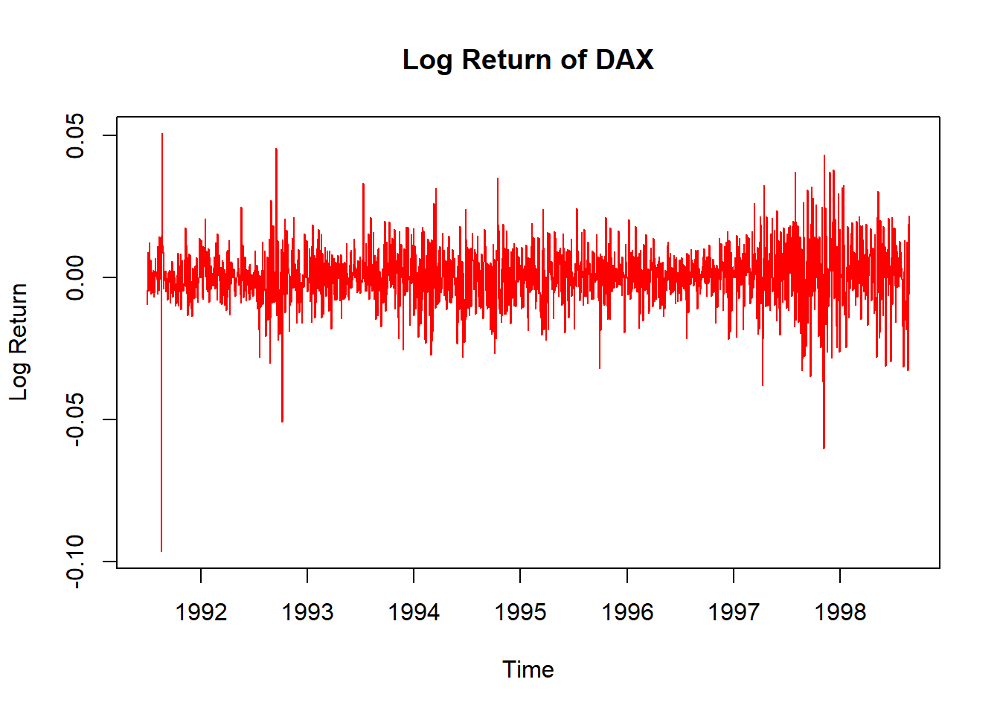
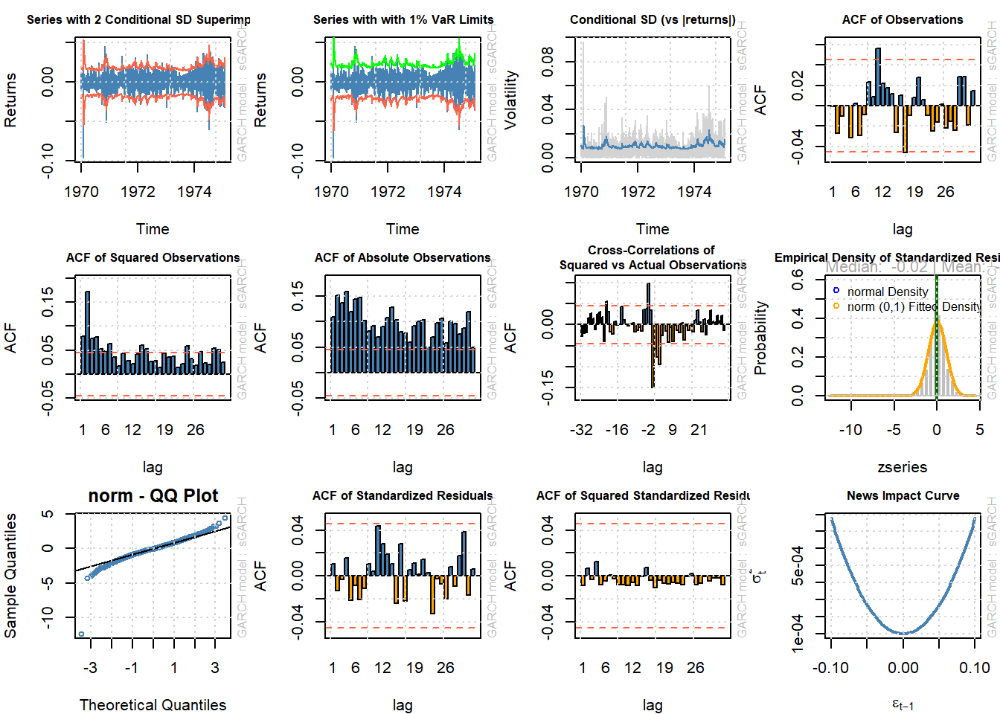

Bab 6 ARCH Model
Pada satu kasus terjadi saja yang namanya gangguan vilatilitas. Metode ini ditemukan karena danya data harga saham yang begitu volatilitas . Harga saham adalah suatu data yang sangat volatilitas karena dalam waktu seperdetik saja maka harga saham itu bisa berubah. Dalam hitungan jam saja harga saham akan melonkjak dengan tajam yang dapat memberikan keuntungan bagi beberapa investor dan juga memberikan keuntungan bagi sebagai investor lainnya.
Semua data bergerak variasi artinya tidak ada data yang bergerak begitu mendatar saja seperti garis lurus. Dari waktu ke waktu tidak ada peningkatan maupun penurunan. Ada beberapa data yang model ini seperti saham yang tidak terkenal Kita bisa melihat harga saham beberapa peruisahaan yang tidak likuid (Ilikuid) mempunyai pergerakan yang “sangat stabil”. Hal ini disebabkan tidak adanya pergerakan.
Masalah isu yang sangat utama dalam metode ini adalah volatilitias atau keragaman yang sangat tinggi dari beberapa jenis data. Dengan adanya vilatilitas yang beragam akan menyebabakan estimasi galat E(ε)≠0. Hal ini tentu tidak bisa menjadikan estimasi tepat. Untuk itu perlu suatu model untuk mengatasi permasalahan error ini. Kalau error yang tidak konstan ini dipaksakan untuk diterapakan maka hasil estimasi menjadi bias, atau menjadi kemungkinan salah yang besar.
Untuk melakukan metode ARCH maka kita bisa menggunakan Uji Box-Jenkins Uji ARCH Test
6.1 Model GARCH
Adalah Engel yang menemukan metode ini pada tahun 1982 dengan inspirasi atas kondisi data yang cenderung Volatile. vilatiel kondisi tidak beraturan dan cenderung berubah . Data volatile pada praktik manajemen risiko, pemilihan portofolio, dan
volatile dengan variance volatile
Borilsav menggunakan GARCH dengan menggunakan residual
volatile kondisi ketidakstabilan, cenderung bervariasi dan sulit diperkirakan implikasi data volatilitas tinggi , cenderung bervariasi sulit diperkirakan
Model ARCH Tentu tidak semua data cocok dengan menggunakan data model ARCH seperti ini. Kalau data dalam keadaan “baik-baik” saja maka kita tidak perlu untuk juga untuk menggunakan hal seperti ini. Ada data yang cenderung musiman dan ada juga data yang dapat mudah diramalakan dengan metide ARIMA saja.
Identifikasi dengan metode Box Jenkins adanya efek ARCH dari indentifikasi 2. pola residual dengan collergam menggunakan ARCH multiplier Langrange Estimasi model persamaan ragam \[ Z_t=V_t √(α_0+α_1 Z_(t-1)^2 )\] dengan nilai α0 > 1 dan 0<α1<1
pengujian estimasi error pengujian keacakan residual dan efek ARCH
Peramalan menggunakan peramalan terbaik dengan menggunakan RMSE MAE dan MAPE
##
## ARCH LM-test; Null hypothesis: no ARCH effects
##
## data: residuals(modelarimalynx)
## Chi-squared = 13.226, df = 12, p-value = 0.3528Hasil perhitungan menunjukkan tdiak adanya heteroskedatisitas maka untu uji GARCH juga tidak dipelrukan. KIni dengan dmeikian kemungkinan menggunakan SARIMA yakni Seasonal ARIMA yang emmpertimbangkan seasonal
6.2 Langkah UJi GARCH
Memilih data set yang mempunyai volatilitas yang tinggi
TRansformasi daata dengan log return agar data stabil
Melakukan uji staioner dengan menggunakan ADF Test
Diagnostik model untuk menguji REsidual
Prediksi atau forecast menngunakan rugarch
KIta akan terapkan pada data Air Passenger yang ada di sana
# Data EuStockMarkets
data("EuStockMarkets")
# Ambil salah satu indeks saham, misalnya DAX (Jerman)
dax <- EuStockMarkets[, "DAX"]
# Plot data
plot(dax, main = "DAX Index", col = "blue", ylab = "Price")
# Hitung log-return untuk membuat data stasioner
dax_return <- diff(log(dax)) # Logarithmic return
plot(dax_return, main = "Log Return of DAX", col = "red", ylab = "Log Return")
dalam analsisi ini kita bisa membuat evaluasi model tersebt karena hal itu dapat untuk membuat kita yakin dengan hasil yang kta peroleh.
## Warning in adf.test(dax_return, alternative =
## "stationary"): p-value smaller than printed p-value##
## Augmented Dickey-Fuller Test
##
## data: dax_return
## Dickey-Fuller = -11.105, Lag order = 12, p-value
## = 0.01
## alternative hypothesis: stationarysetelah itu kita bisa melakukan untuk pemodelan model GARCH seperti
library(rugarch)
library(tseries)
library(quantmod)
# Definisikan spesifikasi model GARCH(1,1)
garch_spec <- ugarchspec(
variance.model = list(model = "sGARCH", garchOrder = c(1,1)),
mean.model = list(armaOrder = c(0,0), include.mean = TRUE),
distribution.model = "norm" # Distribusi error normal
)
# Estimasi model GARCH
garch_fit <- ugarchfit(spec = garch_spec, data = dax_return)
# Ringkasan hasil estimasi
print(garch_fit)##
## *---------------------------------*
## * GARCH Model Fit *
## *---------------------------------*
##
## Conditional Variance Dynamics
## -----------------------------------
## GARCH Model : sGARCH(1,1)
## Mean Model : ARFIMA(0,0,0)
## Distribution : norm
##
## Optimal Parameters
## ------------------------------------
## Estimate Std. Error t value Pr(>|t|)
## mu 0.000656 0.000215 3.0447 0.002329
## omega 0.000005 0.000000 12.6841 0.000000
## alpha1 0.067762 0.005383 12.5892 0.000000
## beta1 0.888989 0.008284 107.3101 0.000000
##
## Robust Standard Errors:
## Estimate Std. Error t value Pr(>|t|)
## mu 0.000656 0.000248 2.6456 0.008155
## omega 0.000005 0.000001 3.1815 0.001465
## alpha1 0.067762 0.009490 7.1404 0.000000
## beta1 0.888989 0.015849 56.0907 0.000000
##
## LogLikelihood : 5966.213
##
## Information Criteria
## ------------------------------------
##
## Akaike -6.4144
## Bayes -6.4025
## Shibata -6.4144
## Hannan-Quinn -6.4100
##
## Weighted Ljung-Box Test on Standardized Residuals
## ------------------------------------
## statistic p-value
## Lag[1] 0.1975 0.6567
## Lag[2*(p+q)+(p+q)-1][2] 0.3452 0.7711
## Lag[4*(p+q)+(p+q)-1][5] 0.7953 0.9040
## d.o.f=0
## H0 : No serial correlation
##
## Weighted Ljung-Box Test on Standardized Squared Residuals
## ------------------------------------
## statistic p-value
## Lag[1] 0.1210 0.7279
## Lag[2*(p+q)+(p+q)-1][5] 0.3371 0.9797
## Lag[4*(p+q)+(p+q)-1][9] 0.5001 0.9985
## d.o.f=2
##
## Weighted ARCH LM Tests
## ------------------------------------
## Statistic Shape Scale P-Value
## ARCH Lag[3] 0.01512 0.500 2.000 0.9021
## ARCH Lag[5] 0.32095 1.440 1.667 0.9346
## ARCH Lag[7] 0.37536 2.315 1.543 0.9882
##
## Nyblom stability test
## ------------------------------------
## Joint Statistic: 30.659
## Individual Statistics:
## mu 0.7070
## omega 0.7168
## alpha1 0.2935
## beta1 0.1076
##
## Asymptotic Critical Values (10% 5% 1%)
## Joint Statistic: 1.07 1.24 1.6
## Individual Statistic: 0.35 0.47 0.75
##
## Sign Bias Test
## ------------------------------------
## t-value prob sig
## Sign Bias 1.4167 0.1567
## Negative Sign Bias 0.7978 0.4251
## Positive Sign Bias 0.4236 0.6719
## Joint Effect 4.2196 0.2387
##
##
## Adjusted Pearson Goodness-of-Fit Test:
## ------------------------------------
## group statistic p-value(g-1)
## 1 20 97.18 1.729e-12
## 2 30 128.57 1.690e-14
## 3 40 130.87 7.467e-12
## 4 50 193.10 5.368e-19
##
##
## Elapsed time : 0.312506Kemudian baru kita evaluasi model tersebut adalah dengan beberapa grafik yang ada. Dalam grafik ini diberikan
par(mar = c(4, 4, 2, 1)) # Format: c(bawah, kiri, atas, kanan)
# Plot residual standar
plot(garch_fit, which = "all")##
## please wait...calculating quantiles...